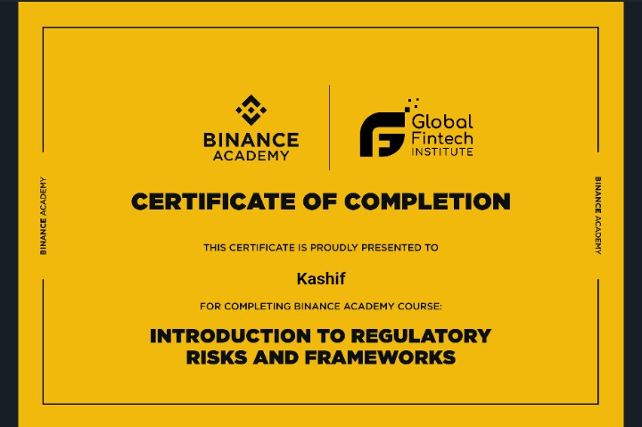
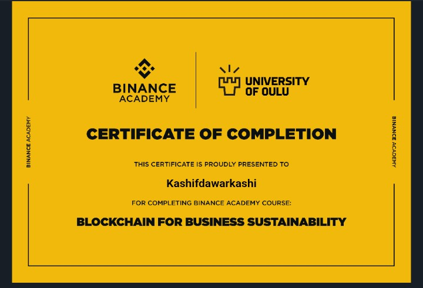
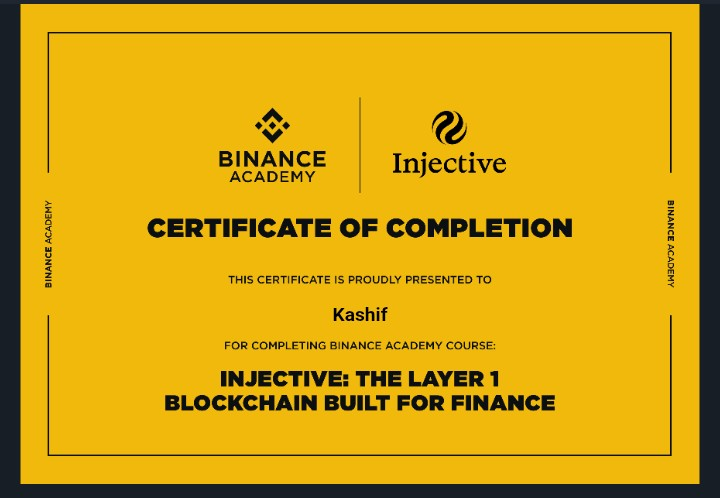
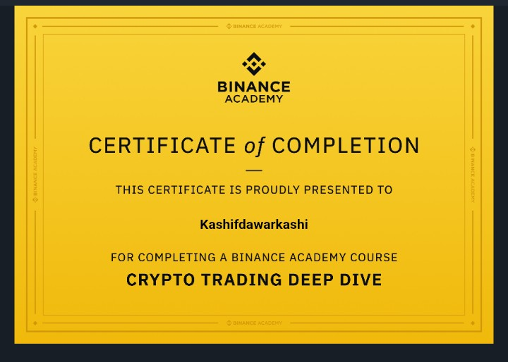
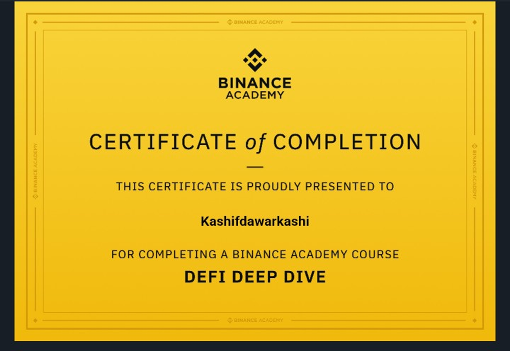
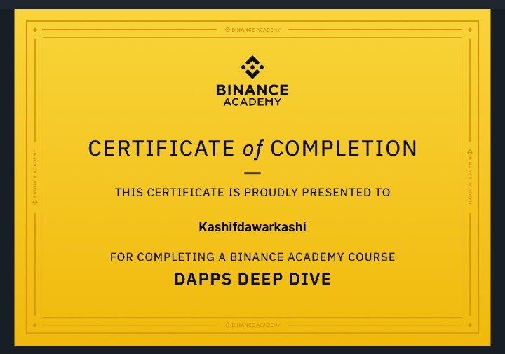
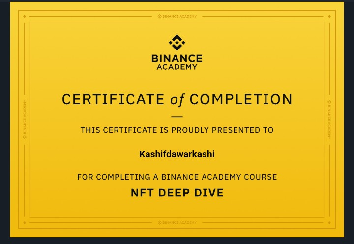
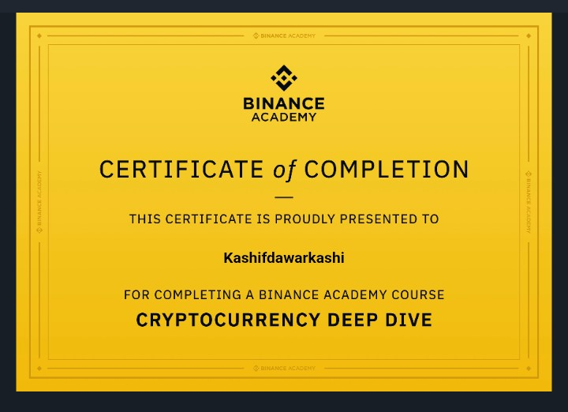
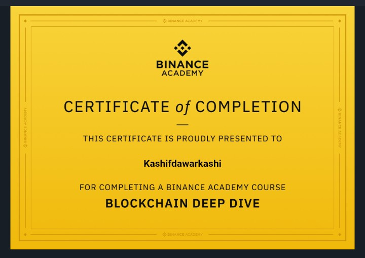
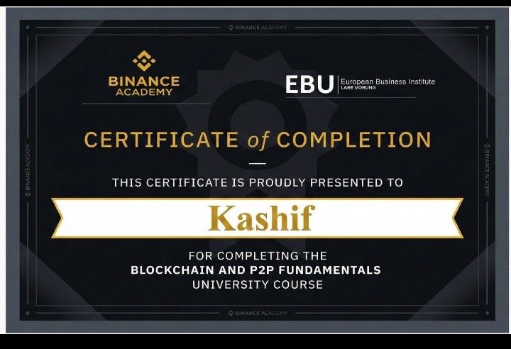

A comprehensive academic program bridging the gap between blockchain technology and business strategy. Focuses on the economic implications of digital assets, European regulatory frameworks, and integrating decentralized solutions into traditional industry models.

Accredited University-level course focused on the end-to-end implementation of blockchain technology. Validates expertise in transitioning from decentralized fundamentals to high-level corporate architectures and industrial-scale token solutions.

Advanced study of the legal landscape surrounding digital assets. Covers MiCA regulations, Anti-Money Laundering (AML) directives, and the compliance requirements necessary for launching legitimate fintech products in global markets.

Explores the intersection of ESG (Environmental, Social, and Governance) goals and blockchain. Covers energy-efficient consensus mechanisms (Proof-of-Stake) and using distributed ledgers for supply chain transparency.

Specialized training in deploying and managing blockchain nodes on Amazon Web Services (AWS) infrastructure. Validates expertise in BNB Chain architecture, cloud security, and ensuring high availability for decentralized networks.

Technical deep dive into Injective Protocol, a layer-1 blockchain built specifically for finance. Focuses on on-chain order books, derivatives trading architecture, and cross-chain interoperability via Cosmos IBC.

Focuses on market mechanics, including liquidity pools, order types (limit/market/stop), technical analysis indicators, and risk management strategies for algorithmic trading bots.

Mastery of Decentralized Finance protocols. Covers Automated Market Makers (AMMs) like Uniswap, lending/borrowing logic (Aave/Compound), and yield farming strategies.

Architecture of Decentralized Applications. Focuses on connecting frontend user interfaces (React/Next.js) to backend smart contracts using libraries like Ethers.js and Web3.js.

Technical understanding of Non-Fungible Tokens. Covers the ERC-721 and ERC-1155 standards, metadata storage (IPFS), and use cases beyond art, such as digital identity and ticketing.

Comprehensive analysis of cryptographic primitives, public/private key cryptography, and the economic models (Tokenomics) that drive value in digital asset ecosystems.

Core fundamentals of distributed ledger technology. Covers consensus algorithms (PoW vs PoS), The Trilemma (Scalability, Security, Decentralization), and Layer 2 scaling solutions.

Fundamental examination of peer-to-peer network architecture. Covers the historical context of decentralized systems, the mechanics of distributed consensus without central authorities, and the underlying cryptographic principles that enable secure, trustless transactions.